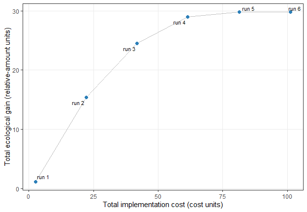

multiscape is an exact optimisation framework for multi-objective spatial planning in R. It is designed for planning problems in which spatial data, ecological or socioeconomic features, constraints, and multiple competing objectives must be considered simultaneously within a single decision-support workflow. The package is built around mixed-integer linear programming (MILP) formulations, allowing users to represent spatial planning problems explicitly as optimisation models and solve them with exact methods. This makes multiscape especially suitable for applications where transparent model structure, reproducibility, and rigorous trade-off analysis are important. multiscape supports both general spatial planning formulations and action-based formulations in which decisions are expressed as management actions applied across planning units. With it, users can build planning problems from tabular or spatial inputs, define feasible actions and their effects, add targets and other constraints, register multiple objectives such as cost, benefit, profit, or fragmentation, and explore exact trade-offs using multi-objective methods such as weighted-sum, epsilon-constraint, and AUGMECON. Each retained solution preserves the correspondence between its objective values and spatial decisions, allowing alternatives to be analysed in objective space (frontier_*()), decision space (selection_*()), and jointly through objective–decision linkage (linkage_*()).
Installation
Install the stable version from Comprehensive R Archive Network (CRAN):
install.packages("multiscape")Or install the lastest development version from GitHub:
if (!requireNamespace("remotes", quietly = TRUE)) {
install.packages("remotes")
}
remotes::install_github("josesalgr/multiscape")Getting started
The planning problem
The following example represents a stylised multi-objective multi-use spatial planning problem. The landscape is divided into 64 planning units and contains two ecological features: woodland and riparian habitat. Each planning unit can remain unmanaged or be assigned to one of two mutually exclusive management actions: protection or restoration.
For every planning unit \(i\) and action \(a\), the model defines a binary decision variable \(x_{ia}\). The variable equals 1 when action \(a\) is assigned to planning unit \(i\), and 0 otherwise. Because the actions are mutually exclusive, at most one action can be selected in each planning unit. A planning unit may also remain without intervention.
The analysis asks:
How does the spatial allocation of protection and restoration change as progressively larger implementation budgets become available, and how much additional ecological benefit can be obtained?
For each planning unit, amount is a synthetic relative feature amount. Baseline values range from 0 to 1: a value of 0 represents no local amount of the feature, whereas 1 is the largest baseline amount represented in the simulated landscape. Intermediate values are continuous relative amounts, not probabilities of occurrence or binary presence–absence observations. Woodland forms a north-western hotspot, whereas riparian habitat follows a diagonal corridor.
The 0–1 scale applies to the baseline values only. Because these are relative indices rather than probabilities or proportions, action-induced final amounts may exceed 1. For example, doubling a baseline amount of 0.6 produces a final relative amount of 1.2.
All inputs are included with multiscape:
# load packages
library(multiscape)
library(dplyr)
# Load a complete simulated planning problem.
example_data <- load_sim_multiaction()The object contains the following linked tables:
-
planning_units: planning-unit identifiers, geometries, and baseline costs; -
features: identifiers and names of the ecological features; -
dist_features: baseline feature amounts by planning unit; -
actions: the available management actions; -
action_costs: the cost of each feasible planning-unit–action combination; -
effects: the expected effect of each action on each feature; and -
effect_assumptions: the coefficients used to generate the simulated effects.
The simulated baseline feature amounts are shown below.

Stage 1: Create the base problem
create_problem() establishes the spatial domain and the ecological features being planned. Here, planning_units contains the 64 geometries, features defines the feature catalogue, and dist_features links every planning unit to its woodland and riparian amounts. The planning-unit cost column is retained in the problem, although the objective used below includes only action-specific implementation costs.
# Initialise the problem using planning-unit geometries and baseline feature
# amounts.
problem <- create_problem(
pu = example_data$planning_units,
features = example_data$features,
dist_features = example_data$dist_features,
cost = "cost"
)Stage 2: Define actions and their effects
add_actions() registers protection and restoration as alternative management uses, associates each action with its local implementation cost, and defines the feasible planning-unit–action combinations. Both actions are available throughout this landscape. The model permits at most one selected action per planning unit, while leaving a unit unmanaged remains feasible.
Effects describe how an ecological feature changes when an action is selected. add_effects() supports two interpretations:
- with
effect_type = "after", the input specifies the expected final feature amount under the action; - with
effect_type = "delta", the input specifies the signed change from the baseline.
With the delta interpretation, positive values represent gains, negative values represent losses, and zero indicates no change. If \(b_{if}\) is the baseline amount of feature \(f\) in planning unit \(i\), the final amount after selecting action \(a\) is
\[\text{final amount}_{iaf} = b_{if} + \Delta_{iaf},\]
where \(\Delta_{iaf}\) is the value supplied in the delta column. The choice between after and delta therefore depends on how ecological responses were estimated, not on the optimisation method.
This example uses explicit delta values. Protection is assumed to increase woodland and riparian amounts by 100% and 30% of their respective local baselines, whereas restoration increases them by 25% and 130%. These percentages are used only to generate the simulated data. The table passed to add_effects() already contains the resulting absolute change for every planning-unit–action–feature combination. For example, a woodland baseline of 0.6 combined with a 100% relative increase produces delta = 0.6 and a final relative amount of 1.2. The coefficient representing the relative increase must therefore not be confused with either the delta value or the final feature amount.
# Inspect the assumptions used to generate their
# ecological effects, and the first planning-unit--action--feature records.
example_data$effect_assumptions
#> action feature relative_change
#> 1 protect 1 1.00
#> 2 protect 2 0.30
#> 3 restore 1 0.25
#> 4 restore 2 1.30
head(example_data$effects)
#> pu action feature delta
#> 1 1 protect 1 0.0016615573
#> 2 1 protect 2 0.0934209672
#> 3 1 restore 1 0.0004153893
#> 4 1 restore 2 0.4048241911
#> 5 2 protect 1 0.0024787522
#> 6 2 protect 2 0.0132913814
problem <- problem |>
add_actions(
actions = example_data$actions,
cost = example_data$action_costs
) |>
add_effects(
effects = example_data$effects,
effect_type = "delta"
)Stage 3: Define the constraints
add_constraint_targets_relative() requires the selected actions to generate gains equivalent to at least 10% of the total baseline amount of each feature separately. Targets restrict the feasible set; they are not additional objectives. Other applications could introduce budgets, area requirements, locked decisions, or spatial constraints at this stage.
# Require action-induced gains of at least 10% of the total baseline amount of
# woodland and at least 10% of the total baseline amount of riparian habitat.
problem <- problem |>
add_constraint_targets_relative(0.10)Stage 4: Define the objectives
Objectives are registered independently so they can later be combined using different multi-objective methods. add_objective_min_cost() minimises the total implementation cost of the selected actions. Planning-unit costs are excluded because the example defines economic expenditure through the action-specific cost table. add_objective_max_benefit() maximises total ecological benefit, calculated as the sum of action-induced gains across selected planning units and features.
Because woodland and riparian effects use the same relative scale and no feature-specific weights are supplied, the example gives both features equal weight in the benefit objective. See the add_objective_max_benefit() reference for the complete definition of the objective, its available arguments, and how feature contributions are aggregated.
problem <- problem |>
# Minimise action-specific implementation costs. Planning-unit costs are
# excluded because expenditure is represented by the action-cost table.
add_objective_min_cost(
alias = "cost",
include_pu_cost = FALSE,
include_action_cost = TRUE
) |>
# Maximise the sum of action-induced ecological gains across both features.
add_objective_max_benefit(alias = "benefit")The summary confirms that the spatial inputs, actions, effects, constraints, and two objectives are present. It also shows that the multi-objective method and solver have not yet been selected.
# Print the complete formulation before selecting a multi-objective method
# and optimisation solver.
problem
#> A multiscape object (<Problem>)
#> ├─data
#> │├─planning units: <data.frame> (64 total)
#> │├─costs: min: 0, max: 0
#> │└─features: 2 total ("woodland", "riparian")
#> └─actions and effects
#> │├─actions: 2 total ("Protect", "Restore")
#> │├─feasible action pairs: 128 feasible rows
#> │├─action costs: min: 1.05, max: 2.3
#> │├─effect data: 256 rows
#> │├─effect mode: benefit only
#> │└─profit data: none
#> └─spatial
#> │├─geometry: sf (64 rows)
#> │├─coordinates: 64 rows (x: 0.5..7.5, y: 0.5..7.5)
#> │└─relations: none
#> └─targets and constraints
#> │├─targets: 2 rows
#> │├─target preview: "woodland" >= 1.409, "riparian" >= 1.345
#> │├─area constraints: none
#> │├─budget constraints: none
#> │├─planning-unit locks: none
#> │└─action locks: none
#> └─model
#> │├─status: not built yet (will build in solve())
#> │├─objectives: 2 registered (benefit, cost)
#> │├─method: not set
#> │├─solver: not set (auto)
#> │└─checks: incomplete (multiple objectives registered but no MO method
#> selected)
#> # ℹ Use `x$data` to inspect stored tables and model snapshots.Configure the multi-objective method
The registered objectives define what the plans should achieve; the multi-objective method determines how the trade-off between them is explored. Here, set_method_epsilon_constraint() treats ecological benefit as the primary objective and evaluates six increasingly permissive limits on total cost. For each cost limit, the model identifies the feasible plan with the greatest ecological benefit.
With lexicographic = TRUE, solutions tied on the primary benefit objective are refined by minimising cost. This prevents the method from returning an unnecessarily expensive plan when a less costly plan attains the same benefit. The six limits are generated by set_runs_grid(). The example uses Gurobi through set_solver_gurobi(), which requires the Gurobi R package and a valid licence.
problem <- problem |>
# Maximise benefit under six alternative limits on total cost.
# Lexicographic refinement selects the least-cost plan among solutions tied
# on the primary objective.
set_method_epsilon_constraint(
primary = "benefit",
runs = set_runs_grid(6),
lexicographic = TRUE
) |>
set_solver_gurobi(gap_limit = 0)Solve the problem
solve() returns a SolutionSet containing the solver status, objective values, selected action assignments, and run-level information for every epsilon-constraint problem. get_objectives() extracts the resulting objective values, with one row per stored solution and one column per objective.
solutions <- solve(problem)
get_objectives(solutions, format = "wide")
#> solution_id benefit cost
#> 1 1 1.185508 2.60
#> 2 2 15.359707 22.25
#> 3 3 24.535156 41.91
#> 4 4 29.006289 61.41
#> 5 5 29.782291 81.46
#> 6 6 29.796218 101.28Link run configurations to stored solutions
A multi-objective method evaluates a sequence of optimisation configurations. get_runs() returns the registry of these configurations together with their solver outcomes and, when available, the identifier of the solution they produced.
runs <- get_runs(solutions)
runs
#> run_id solution_id status runtime gap
#> 1 1 1 optimal 0.005000114 0
#> 2 2 2 optimal 0.003999949 0
#> 3 3 3 optimal 0.008000135 0
#> 4 4 4 optimal 0.003000021 0
#> 5 5 5 optimal 0.005000114 0
#> 6 6 6 optimal 0.002000093 0Each row records one attempted run configuration. run_id identifies the configuration, including its epsilon limit and solver outcome. A run is not itself a solution: an infeasible configuration, a run that terminates without a feasible solution, or a run affected by a solver error may have no associated solution_id. When a run does produce a solution that is retained in the SolutionSet, solution_id identifies that stored solution for subsequent extraction, comparison, and mapping. In this example, all configured runs produce stored solutions.
The treatment of infeasible runs, runs without a solution, and unexpected errors can be controlled with set_runs_control(). Depending on these settings, solving can stop when a failed configuration is encountered or retain the failed run in the run history without an associated solution.
This distinction is important when reading the figures below. With label_runs = TRUE, plot_tradeoff() labels points using run_id, whereas functions that extract or map stored plans generally use solution_id. get_runs() provides the link between the run configurations and the solutions that were successfully stored.
Interpret the solutions
Objective space: performance and trade-offs
Each point below represents a stored spatial solution generated by one epsilon-constraint run. The plot is produced with plot_tradeoff(). With lexicographic refinement, the returned plans are intended to lie on the observed efficient frontier. This is the frontier represented by the six runs evaluated here, not necessarily every attainable trade-off in the complete discrete solution space.
The horizontal axis shows the cost actually incurred by each solution, which may be lower than the upper cost limit imposed in its run. The vertical axis shows total ecological benefit, obtained by summing the action-induced gains across both features and all selected planning units. Moving from left to right therefore reveals how the maximum observed ecological benefit changes as more expensive plans become available.
plot_tradeoff(
solutions,
objectives = c("cost", "benefit"),
connect = TRUE,
label_runs = TRUE
) +
ggplot2::labs(
x = "Total implementation cost (cost units)",
y = "Total ecological gain (relative-amount units)"
)
The curve rises rapidly at first and becomes flatter near its high-benefit end. In this region, substantial increases in implementation cost produce only small additional ecological gains. The result illustrates declining marginal returns and helps identify where further expenditure has comparatively little effect.
Identify a compromise solution
A multi-objective analysis should consider both objective space, which describes how well each plan performs, and decision space, which describes where actions are allocated. frontier_knee() identifies an empirical compromise on the observed frontier: a solution near the point where additional ecological gains begin to require comparatively large increases in cost.
knee <- frontier_knee(
solutions,
objectives = c("cost", "benefit")
)
knee |> dplyr::select(solution_id, cost, benefit, knee_score, method)
#> solution_id cost benefit knee_score method
#> 1 3 41.91 24.53516 0.295399 distanceThe knee is a decision aid rather than a universally optimal answer. Its location depends on the solutions included in the observed frontier, the normalisation of the objectives, and the geometric criterion used to calculate the knee score. It should therefore be interpreted alongside policy preferences and the spatial characteristics of the selected plan.
frontier_extremes() and frontier_distances() provide complementary views of the observed objective space. They identify the objective-wise extremes and calculate each solution’s normalised distance from the observed ideal and nadir points.
frontier_extremes(
solutions,
objectives = c("cost", "benefit"),
ties = "first"
)
#> solution_id objective sense bound role value
#> 1 1 cost min min best 2.600000
#> 2 6 cost min max worst 101.280000
#> 3 1 benefit max min worst 1.185508
#> 4 6 benefit max max best 29.796218
frontier_distances(
solutions,
objectives = c("cost", "benefit")
)
#> solution_id cost benefit norm_cost norm_benefit distance_to_ideal
#> 1 1 2.60 1.185508 0.0000000 1.0000000000 1.0000000
#> 2 2 22.25 15.359707 0.1991285 0.5045841386 0.5424549
#> 3 3 41.91 24.535156 0.3983583 0.1838843574 0.4387514
#> 4 4 61.41 29.006289 0.5959668 0.0276095455 0.5966060
#> 5 5 81.46 29.782291 0.7991488 0.0004867732 0.7991489
#> 6 6 101.28 29.796218 1.0000000 0.0000000000 1.0000000
#> rank_to_ideal
#> 1 5
#> 2 2
#> 3 1
#> 4 3
#> 5 4
#> 6 5Decision space: spatial prescriptions
Plans that are close in objective space can still prescribe different actions in different locations. plot_spatial_actions() complements the trade-off plot by showing how protection and restoration are reallocated as the cost limit is relaxed. Planning units shown only through the base layer receive no management action in the corresponding solution. In the call below, solutions = 1:6 selects solution IDs, not run IDs; the preceding run registry provides the link between the two identifiers.
plot_spatial_actions(
solutions,
solutions = 1:6,
fill_values = c(
protect = "#2E7D32",
restore = "#E69F00"
),
base_alpha = 0.12
)
The sequence of maps should be interpreted together with the baseline feature patterns. Protection and restoration may expand into new planning units as larger budgets become available, but actions can also be substituted or relocated when a different spatial combination produces greater benefit under the active cost limit.
Compare spatial similarity
Similar objective values do not necessarily imply similar spatial prescriptions. selection_similarity() compares the sets of selected planning-unit–action pairs for every pair of solutions. Jaccard similarity is useful here because it focuses on jointly selected assignments and does not inflate similarity through planning units that remain unmanaged in both plans.
A value of 1 indicates identical sets of selected assignments, whereas 0 indicates that the two solutions share no selected planning-unit–action pair. Rows and columns correspond to solution identifiers, and the diagonal is always 1 because every solution is identical to itself.
selection_similarity(
solutions,
metric = "jaccard",
format = "matrix"
)
#> 1 2 3 4 5 6
#> 1 1.00000000 0.0000000 0.03448276 0.02439024 0.01886792 0.01538462
#> 2 0.00000000 1.0000000 0.53571429 0.37500000 0.28846154 0.23437500
#> 3 0.03448276 0.5357143 1.00000000 0.70000000 0.53846154 0.43750000
#> 4 0.02439024 0.3750000 0.70000000 1.00000000 0.76923077 0.62500000
#> 5 0.01886792 0.2884615 0.53846154 0.76923077 1.00000000 0.78461538
#> 6 0.01538462 0.2343750 0.43750000 0.62500000 0.78461538 1.00000000
#> attr(,"metric")
#> [1] "jaccard"Identify recurrent action assignments
selection_frequency() calculates how often each planning-unit–action pair is selected across the solution set. In this example, frequency is the proportion of the six solutions containing a particular assignment. High frequency indicates recurrence across the explored trade-offs, but it should not, on its own, be interpreted as ecological irreplaceability.
action_frequency <- selection_frequency(solutions)
head(
action_frequency[order(-action_frequency$frequency), ],
10
)
#> pu action n_selected n_solutions frequency
#> 20 18 restore 5 6 0.8333333
#> 22 19 restore 5 6 0.8333333
#> 42 28 restore 5 6 0.8333333
#> 55 34 protect 5 6 0.8333333
#> 57 35 protect 5 6 0.8333333
#> 62 37 restore 5 6 0.8333333
#> 64 38 restore 5 6 0.8333333
#> 71 41 protect 5 6 0.8333333
#> 73 42 protect 5 6 0.8333333
#> 75 43 protect 5 6 0.8333333Link objective performance to spatial change
Objective-space proximity does not necessarily imply similar spatial prescriptions. frontier_neighbors() identifies local neighbours along the observed objective-space trade-off. Here, solutions are oriented towards increasing ecological benefit, matching the progression from lower- to higher-budget plans used above. linkage_distances() then compares those same solution pairs in objective and decision space.
neighbors <- frontier_neighbors(
solutions,
objectives = c("benefit", "cost")
)
linkage <- linkage_distances(
solutions,
objectives = c("cost", "benefit"),
pairs = neighbors,
decision_metric = "jaccard"
)
linkage |>
dplyr::select(
from_solution,
to_solution,
objective_distance,
decision_distance,
changed_planning_units
)
#> from_solution to_solution objective_distance decision_distance
#> 1 1 2 0.5339373 1.0000000
#> 2 2 3 0.3775459 0.4642857
#> 3 3 4 0.2519343 0.3000000
#> 4 4 5 0.2049843 0.2307692
#> 5 5 6 0.2008518 0.2153846
#> changed_planning_units
#> 1 16
#> 2 13
#> 3 12
#> 4 12
#> 5 13The two distances describe different aspects of the same comparison: objective_distance measures separation in normalised objective space, whereas decision_distance measures dissimilarity between spatial action allocations. Keeping them separate makes it possible to identify similar levels of performance that require substantially different spatial plans.
linkage_transition() provides a more detailed view of a selected comparison. Here, we examine the transition from solution 3 to solution 4.
transition <- linkage_transition(
solutions,
from = 3,
to = 4,
objectives = c("cost", "benefit")
)
transition
#> Objective--decision transition
#> From solution: 3
#> To solution: 4
#>
#> Objective distance: 0.2519
#> Decision distance: 0.3
#>
#> Planning units changed: 12 of 64 (18.8%)
#> Activated: 12
#> Deactivated: 0
#> Action switches: 0
#> Composition changes: 0
#>
#> Objective changes:
#> - cost: 19.5 (improvement -19.5)
#> - benefit: 4.47113 (improvement 4.47113)
#>
#> Use `$summary`, `$objectives`, `$transitions`, `$actions`, or `$state_matrix` for details.The printed summary reports objective and decision distances, the number of planning units whose state changes, and the corresponding changes in each objective. Detailed planning-unit, action, and state-transition tables remain available within the returned object.
linkage_turnover() extends these local comparisons by relating decision-space turnover to the associated objective-space change. Its reconfiguration_rate highlights local transitions that require comparatively large spatial changes for a given separation in objective performance.
turnover <- linkage_turnover(
solutions,
objectives = c("cost", "benefit"),
pairs = neighbors,
decision_metric = "jaccard"
)
turnover |>
dplyr::select(
from_solution,
to_solution,
objective_distance,
decision_distance,
reconfiguration_rate
)
#> from_solution to_solution objective_distance decision_distance
#> 1 1 2 0.5339373 1.0000000
#> 2 2 3 0.3775459 0.4642857
#> 3 3 4 0.2519343 0.3000000
#> 4 4 5 0.2049843 0.2307692
#> 5 5 6 0.2008518 0.2153846
#> reconfiguration_rate
#> 1 1.872879
#> 2 1.229747
#> 3 1.190786
#> 4 1.125790
#> 5 1.072356Informative pairs can then be selected reproducibly with linkage_contrasts(). For example, the contrasts below identify the local transitions with the largest spatial reconfiguration relative to objective-space change.
linkage_contrasts(
turnover,
type = "high_reconfiguration",
n = 2
) |>
dplyr::select(
contrast_rank,
contrast_type,
from_solution,
to_solution,
objective_distance,
decision_distance,
reconfiguration_rate
)
#> contrast_rank contrast_type from_solution to_solution
#> 1 1 high_reconfiguration 1 2
#> 2 2 high_reconfiguration 2 3
#> objective_distance decision_distance reconfiguration_rate
#> 1 0.5339373 1.0000000 1.872879
#> 2 0.3775459 0.4642857 1.229747selection_consistency() provides a complementary decision-space summary of which planning-unit states recur or vary across the alternatives considered.
What can multiscape do?
A planning problem can combine:
- planning units and spatially distributed features;
- alternative actions and action-specific effects;
- targets, budgets, area requirements, and locked decisions;
- boundary, adjacency, distance, and other spatial relations;
- objectives for cost, benefit, loss, profit, impact, and fragmentation;
- post-optimisation analysis in objective space, decision space, and their objective–decision linkage; and
- commercial or open-source optimisation solvers.
Objectives are registered independently from the method used to combine them. multiscape currently implements:
- weighted sum for preference-based combinations of objectives;
- epsilon-constraint for policy or performance thresholds; and
- AUGMECON, the augmented epsilon-constraint method, for systematic generation of efficient alternatives.

Learn more
Browse the function reference or the documentation for the main workflow functions: create_problem(), add_actions(), add_effects(), add_constraint_targets_relative(), the set_method_*() family, and solve(). Post-optimisation tools are organized into the frontier_*(), selection_*(), and linkage_*() families.
If you find a bug or would like to suggest an improvement, please open an issue.